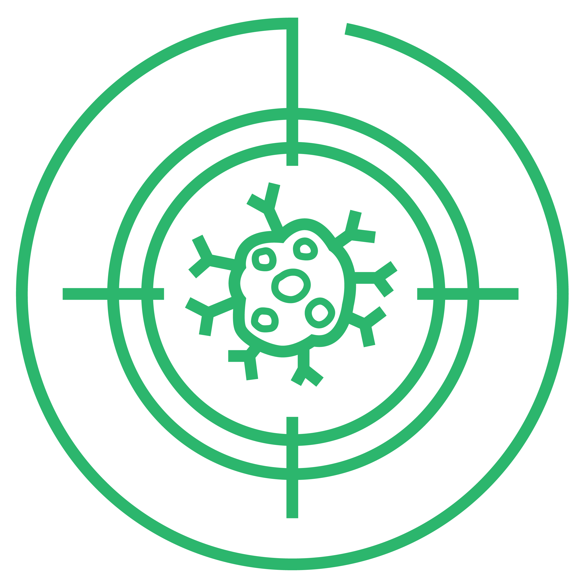

The PRIME trial brings real-time Kilovoltage Intrafraction Monitoring to prostate radiotherapy across 10 Australian centres — tracking tumour motion with sub-millimetre accuracy while the beam is on.
During radiation therapy, the prostate can drift, shift, and rotate due to bladder filling, rectal gas, and patient breathing. In hypofractionated SBRT — where each fraction delivers a high dose over fewer sessions — even millimetre-scale motion can compromise treatment accuracy and increase toxicity to surrounding healthy tissue.
Traditional image guidance captures a snapshot before treatment begins, but the target can move significantly during the minutes of beam delivery. Without real-time monitoring, these intra-fraction motions go undetected and uncorrected.
We need to see the target while the beam is on.

KIM is a real-time image guidance system developed at the Image X Institute, University of Sydney. It uses the existing kV imaging hardware on standard linear accelerators to track implanted fiducial markers in real time, with no additional equipment required.
The gantry-mounted kV imager continuously captures 2D projection images of implanted gold fiducial markers during beam delivery at 5–10 frames per second.
KIM software segments the markers in each frame and reconstructs their 3D positions in six degrees of freedom — three translations and three rotations — using a probability-based matching algorithm.
If motion exceeds protocol thresholds (≥ 3 mm for ≥ 5 s in PRIME), KIM signals the radiation therapists to pause the beam. A couch correction is applied to return the target to the planned position before resuming treatment.
PRIME is a GenesisCare-sponsored, prospective, single-arm feasibility study assessing real-time kilovoltage intrafraction monitoring and manual gating for prostate radiotherapy in men with prostate adenocarcinoma. Conducted across 10 Australian centres with support from the Image X Institute at the University of Sydney, PRIME brings sub-millimetre intra-fraction tracking from research into routine clinical practice.
Assess the feasibility of KIM real-time monitoring with manual gating for prostate radiotherapy delivery across multiple centres, evaluating whether the technology can be reliably integrated into routine clinical workflows.
Patients receive standard-of-care external beam radiotherapy (fractionation per clinician) with continuous KIM monitoring at 5–10 Hz during beam delivery. KIM tracks three intraprostatic fiducial markers in real time. If prostate motion ≥ 3 mm persists for ≥ 5 seconds, KIM signals the radiation therapists to pause the beam and apply couch corrections before resuming.
Proportion of fractions successfully delivered with KIM as per protocol (no KIM-related technical failure), and percentage of fractions where total couch time is completed within 25 minutes.
Technical data from the PRIME cohort — kV frames, position logs, plan and structure sets — will be used to train and validate AI-based marker and markerless tracking models developed by Image X Institute.
Each centre undergoes commissioning and ongoing QA using the tools in this repository, including static localisation accuracy validation and treatment interrupt response verification with a 6 DoF robotic phantom.
ANZCTR: ACTRN12625001244493
Principal Investigator: Dr Mark Sidhom, GenesisCare · Ethics: St Vincent’s Hospital Melbourne HREC
This repository provides purpose-built software tools for commissioning and ongoing quality assurance of the KIM system, replacing legacy MATLAB workflows with a modern Python application.
Validates KIM tracking accuracy under static conditions. Load centroid and trajectory files, visualise deviations with interactive time-series plots, and compute statistical metrics — mean, standard deviation, and 5th/95th percentiles per axis.
Evaluates KIM performance during treatment interruptions using a 6 DoF robot. Time-aligns KIM and robot traces via RMSE-optimised cross-correlation, with automatic couch shift compensation and pass/fail evaluation.
Interactive browser-based visualisation of kV imaging geometry. Explore depth-dependent magnification, geometric penumbra, and divergent beam physics with adjustable SAD, SID, focal spot, and gantry angle controls.